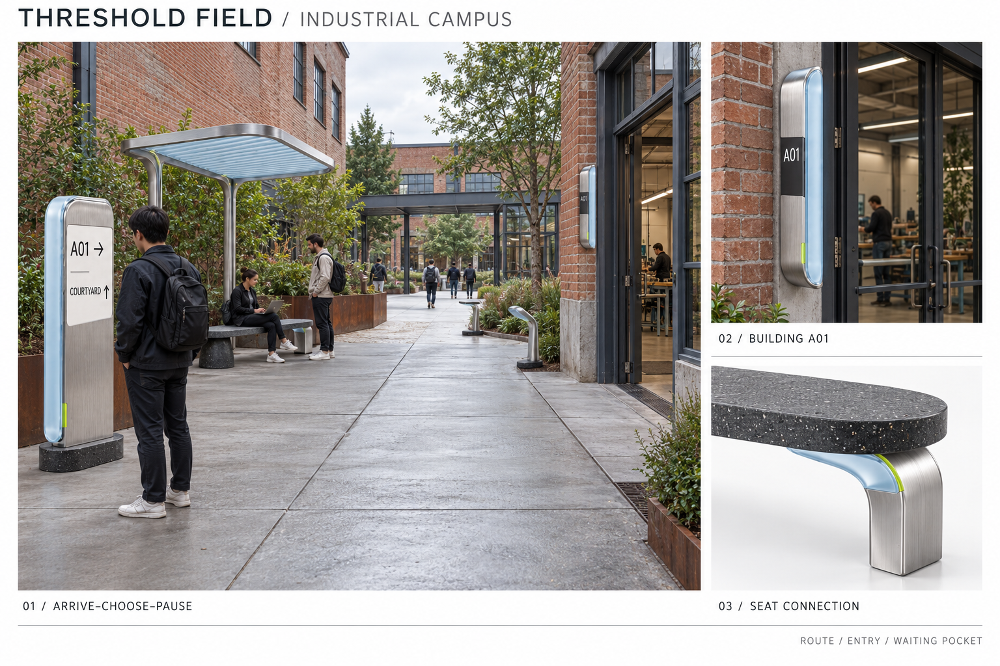
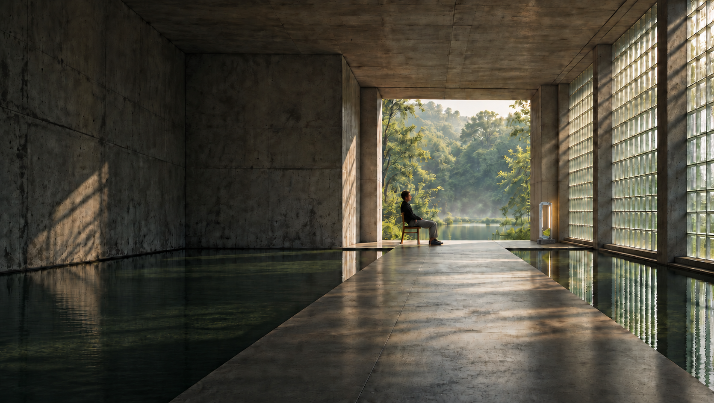
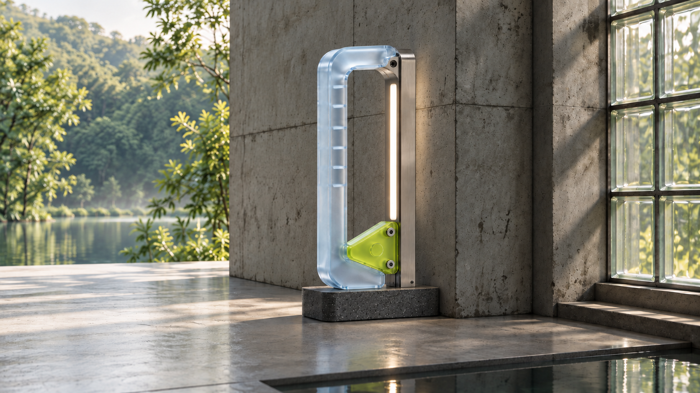
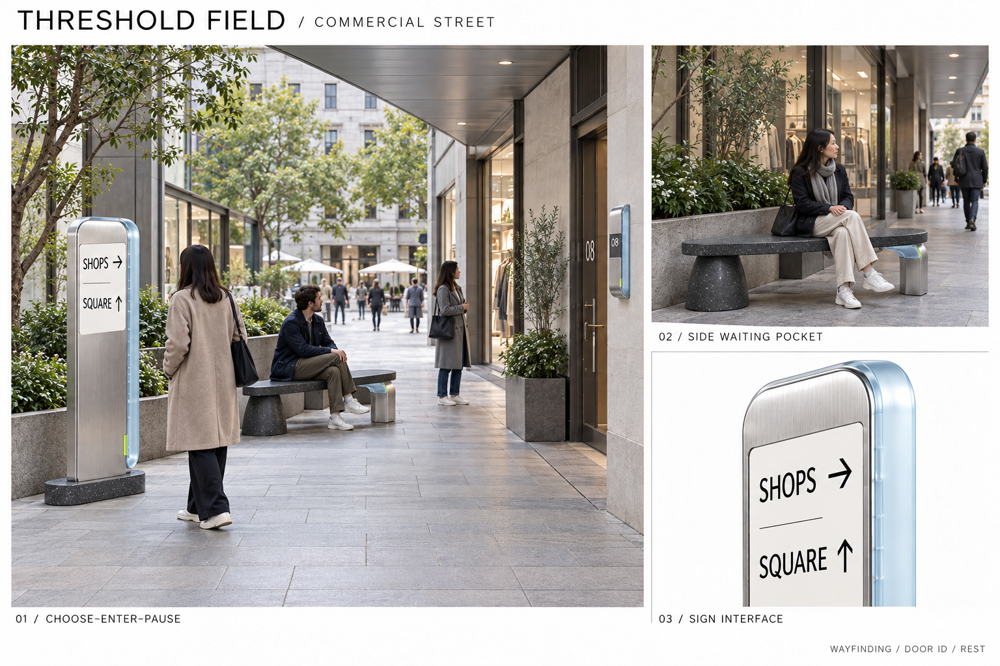
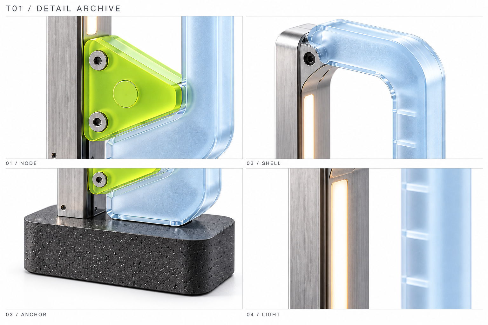
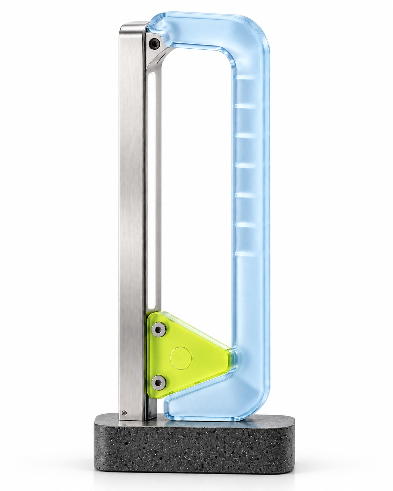
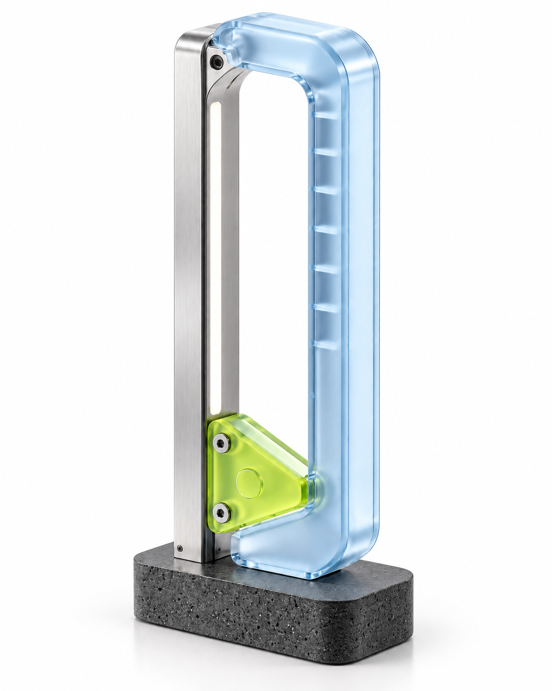
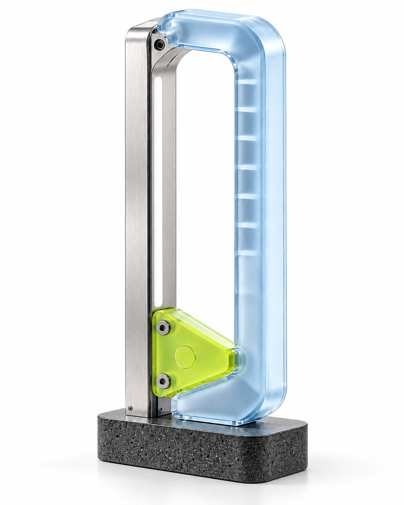

01 / INDUSTRIAL CAMPUS
From passage to pause.
Direction is clear at the entrance. Path markers guide each turn. Seating and shelter create a place to wait beside the route, keeping movement open.

A COLLECTION FOR SPACES BETWEEN
Objects for spaces between.
An open contour.
A clear point of arrival.
A gentle outline marks entry, a turn, or a pause. THRESHOLD gives the spaces between architecture a presence people can sense.
Explore all six objects
One material language. Six spatial roles.
A collection of art-object concepts for bespoke spatial projects. Materials, dimensions, and production details are developed for each commission.
Every object begins with a reason to be there.

Direction is clear at the entrance. Path markers guide each turn. Seating and shelter create a place to wait beside the route, keeping movement open.

The arcade provides shelter. Smooth paving defines the path. Compact entrance markers, wayfinding, and seating work with the architecture already in place.




A quiet record of the connections between metal, the ice-blue protective frame, and the low green node.
Begin with one object.
Give your space a point of arrival.